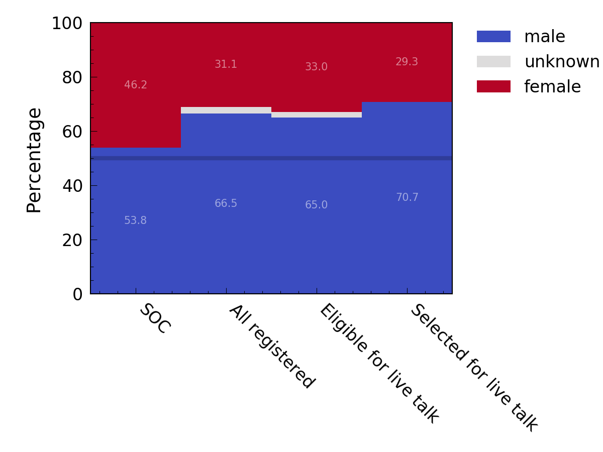

The large number (150) of live talk request submissions forced us to focus on early career researchers (ECRs) and specifically penultimate or final year PhD students and junior post-docs. Each submission was then blindly (i.e. without reference to the name or institution) and independently by 12 members of the SOC. Submissions were ranked equally based on relevance and excitement. To account for scoring differences between the different SOC members each members scores were normalised, however this made little difference to the overall ranking. The top 60 talks were then selected and invited to participate.
The estimated gender breakdown of registered participants, those ECRs eligible for a talk, and those selected for a talk is shown below.
NOTE: Gender was estimated using first names and the genderize.io tool. This provides a probability that each name is either male or female. This tool fails in a small number of cases and will also not reflect any non-binary genders.